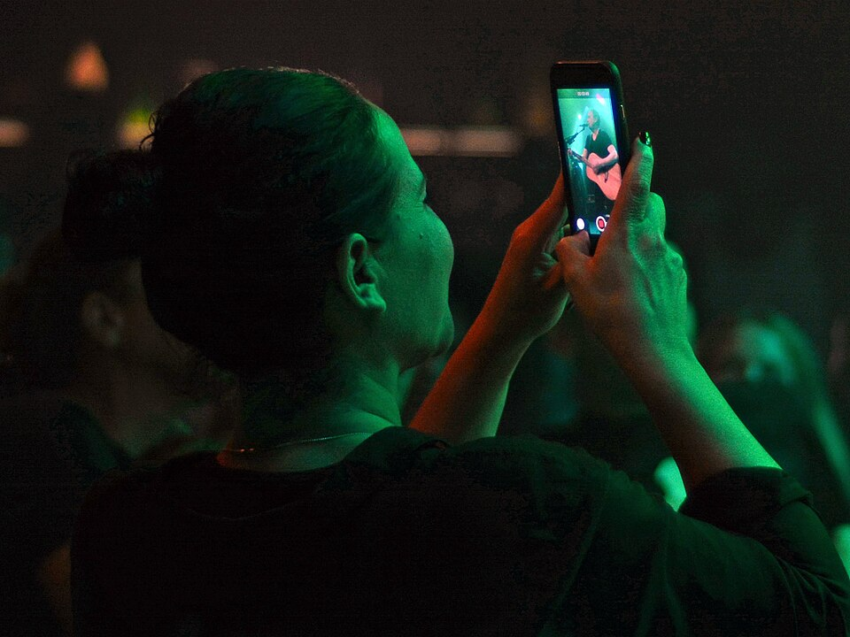
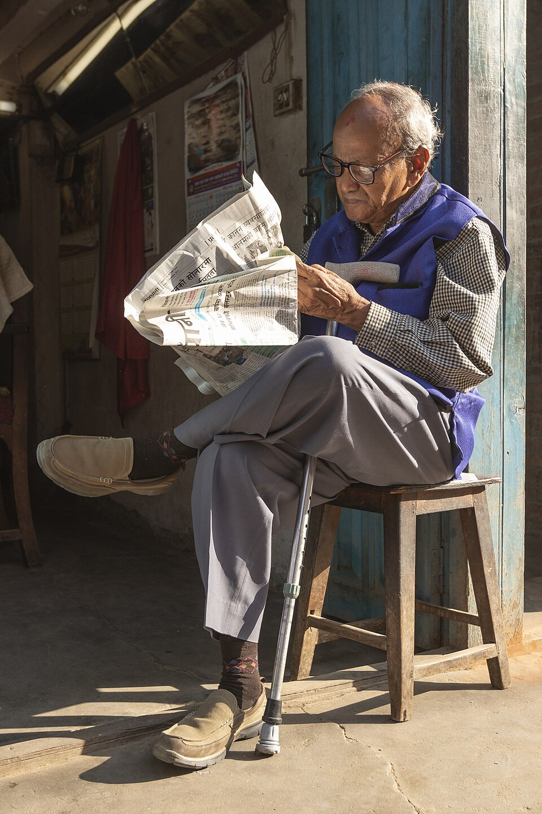
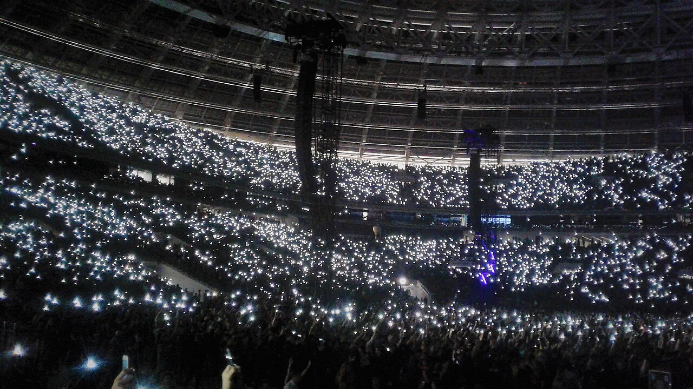

city desk · 2m
Municipal crews reportedly en route. Details verified with fire & civic control room.
Heavy waterlogging on Ring Road after overnight rain — traffic at a standstill near the flyover.
Municipal crews reportedly en route. Details verified with fire & civic control room.
How ordinary people now break news with a smartphone — and how professionals gather, verify and question. Eyewitness media, interview craft, and the ethics that hold it all together.

Journalism was once carried out mainly by professionals in newspapers, TV and radio. The internet, smartphones and social media have changed how news is collected, produced and distributed — and two practices now define contemporary reporting.
Both citizen reporting and interviewing demand accuracy, ethical awareness, verification and responsible communication — from professionals and the public alike.
A witness to an accident, disaster, public event or social issue can record it and share with a large audience — immediately, from a smartphone.
A planned conversation to collect information, opinions and experiences — used across newspapers, radio, TV, podcasts, websites and social media.
The process by which ordinary members of the public collect, record and share information about events or issues of public interest — no press card, no newsroom required.
Be present at accidents, floods, protests, public meetings.
Take photographs and video with everyday devices.
Gather facts, names, context and first-hand accounts.
Publish via social platforms, blogs, websites, messaging.

A witness to a road accident may record video and share it online; citizens likewise document floods, protests, public meetings and environmental problems for the wider public.
Citizen reporting existed before the internet — people have long offered information, photographs and eyewitness accounts to newspapers and broadcasters. Digital technology turned that trickle into a flood.

Smartphones camera + connection in every pocket
Social media instant reach to large audiences
Digital cameras cheap, high-quality capture
Blogs self-publishing without gatekeepers
Video platforms global distribution of footage
Messaging apps fast, direct sharing chains
Online news sites 24/7 appetite for material
Live streams events shared as they happen
Events are reported almost as they happen — photos, videos and text shared within seconds.
Direct accounts from scenes professional journalists have not yet reached.
Published through social media, websites, blogs and messaging platforms.
Ordinary people take part in producing information, not just receiving it.
Text, photographs, video, audio and live streams — from a single device.
Neighbourhood issues that may receive limited attention from mainstream media.
Early photos and videos from witnesses help newsrooms understand events as they develop.
Damaged roads, water shortages, pollution and infrastructure problems gain attention.
During floods, earthquakes and fires, eyewitness media is often the first record.
Opens public communication to people outside the profession.
Voices and angles not immediately present in mainstream coverage.
Verified material becomes an additional source for professional reporting.
Information shared quickly, particularly during breaking events.
A smartphone allows anyone to record and distribute — no expensive equipment.
More people take part in public communication.
Small or local events that may otherwise receive little media attention.
First-hand photographs and video — though they still need verification.
Different experiences and perspectives enter public discussion.
Formal grounding in verification, media law and ethics is often missing.
Unverified information can spread rapidly through social media.
Manipulated images, or old photos recycled as current events.
A photo or short video shows one moment — not the whole event.
Publishing people's faces and situations without appropriate care.
Citizens may put themselves or others at risk filming dramatic events.
News organisations must check citizen content before publishing it as news.
If it can be faked, cropped or re-contextualised, it can mislead — verification is not optional.
Information should be checked before it is shared.
Confirm the source, location, date and context of photos and videos wherever possible.
Respect the privacy and dignity of the people in your frames.
Never publish information that unnecessarily places people in danger.
Clearly identify eyewitness accounts and user-generated content as such.
Respect copyright in photos, videos, music and other material created by others.
An interview is a planned conversation between a journalist and a person or group, held to gather information, opinions, experiences or explanations. It is one of the most important methods of collecting primary information in journalism.
Directly from witnesses, experts, officials or participants.
Specialists explain complex subjects for the audience.
Personal experiences and emotions enter the story.
Questions clarify facts or statements that are unclear.
Interviewing several people reveals multiple viewpoints on one issue.
Officials, organisations and institutions answer for their decisions and actions.
Predetermined questions, planned order — for specific information.
Conversational; questions adapt to the answers given.
Key questions prepared, with room to follow up.
Life, experiences, career, achievements of an individual.
A specialist explains a particular subject or issue.
Information about a current event or issue.
Understanding the interviewee's views on an issue.
Complex, controversial subjects; deep preparation and verification.
Answers plus visuals — camera, lighting, sound, body language.
Audio quality, clarity and questioning carry everything.
Good preparation prevents unnecessary or repetitive questions.
11.2 · Prepare questionsClear, short, relevant, specific, easy to understand — built for the purpose of the interview.
11.3 · Begin with simple questionsEasy openers create a comfortable environment and establish communication.
11.4 · Ask open-ended questions"What are your views about the changes in digital journalism?" — invites detail instead of yes/no.
11.5 · Follow up on answersUnclear reply to "What was the main reason for the decision?" → "Can you explain that reason in more detail?"
Listen for details and follow-ups — don't just wait to speak.
Obtain information; don't impose your personal views.
Unclear answer? Ask — it reduces misunderstanding.
A short pause after an answer often invites more.
Steer the conversation while leaving room to explain.
Eye contact, posture and attention shape the exchange.
With consent and per law & policy — then check statements against the recording.
Your share of the talking should be the questions.
Detailed information, quotations, facts and background.
Framing, lighting, sound, background, body language — and duration.
Voice quality, clear questions and answers, recording, timing.
Text, photographs, audio, video and hyperlinks combined.
Longer conversations; audio quality, pacing, listener engagement.
The interviewer must adapt preparation, pacing and presence to each medium — a TV answer lives on camera; a podcast answer lives in time.
Genuine interest in understanding the subject.
Know the basic facts before asking questions.
Allow the interviewee time to complete important answers.
Hear the detail that triggers the next follow-up.
Questions should be clearly expressed.
Spot unclear, contradictory or unsupported claims.
Personal opinions must not interfere with gathering information.
Ask difficult but relevant questions.
Respect privacy, dignity, accuracy and professional standards.
Witness — see the event first-hand.
Record — capture photos or video.
Context — add relevant information.
Publish — post the material online.
Respond — replies from other users.
Update — share additional information.
The catch: the speed of social media also increases the risk of misinformation — journalists and audiences must verify before accepting anything as fact.
Fire at the old factory building near the market — evacuations underway, smoke visible from 2 km.
Location confirmed via landmarks; timestamps match. Fire dept on scene. ✓ Verified
Citizen reporting does not replace professional journalism. The two interact — each supplying what the other lacks.
Eyewitness information
Photographs and videos
Local perspectives
Initial information about breaking events
Verify the information
Contact additional sources
Provide context and check facts
Investigate and present to journalistic standards
Useful in both traditional and digital journalism — learn to do each of these well.
Identify newsworthy events
Collect and verify information
Conduct interviews
Use smartphones for reporting
Record audio and video
Use social media responsibly
Protect sources where appropriate
Respect privacy and copyright
Follow journalistic ethics
Practise — then verify what you practised
TV and digital news organisations may require short interviews.
Some avoid questions or provide incomplete answers.
Inaccurate or unsupported claims must never be presented as established facts.
Poor connections, background noise and audio delays.
Consider privacy, consent and legal requirements when recording or publishing.
Cut for length — but never distort the meaning of statements.
Be truthful about the purpose of the interview.
Never deliberately mislead the interviewee.
Respect privacy and dignity.
Avoid unnecessary harassment or pressure.
Verify important information.
Provide accurate quotations.
Never take statements out of context.
Give appropriate attention to vulnerable individuals.
Follow relevant professional and legal standards.
Smartphones and social media let ordinary people collect and distribute information — rapid eyewitness material, local perspectives, multimedia. Misinformation, weak verification, privacy and copyright issues demand responsibility in return.
Still the fundamental method of journalistic information gathering — running on preparation, clear questioning, active listening, follow-ups, neutrality, verification and ethical awareness.
Modern journalists must gather, present and verify — across print and digital — while holding professional and ethical standards.
